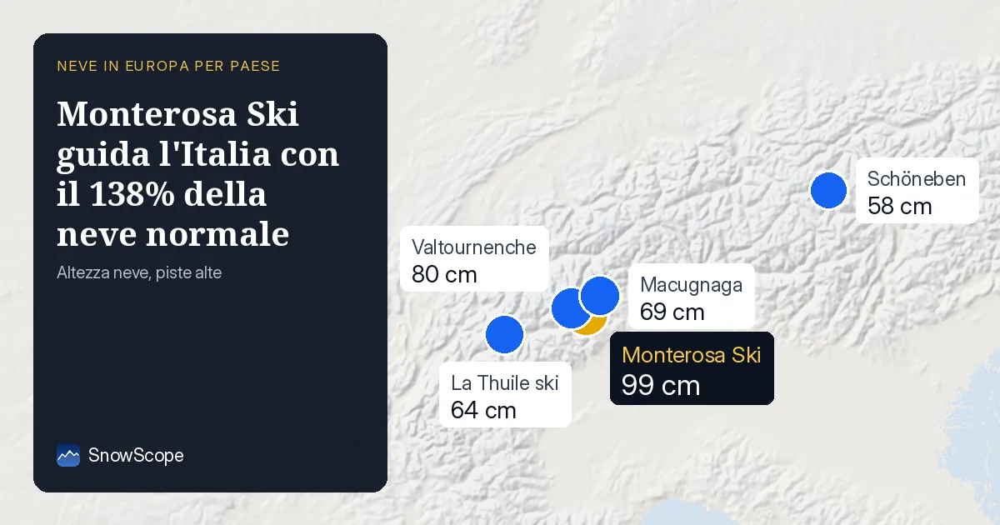
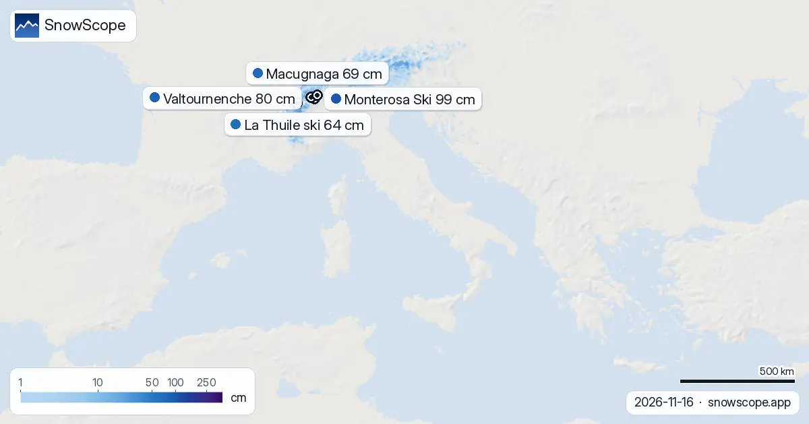

Monterosa Ski guida l'Italia con il 138% della neve normale
Monterosa Ski mantiene 99 cm di neve, corrispondenti al 138% della norma per metà novembre. Le stazioni della Valle d'Aosta dominano le Alpi italiane con un margine notevole; sotto i 1700 metri, il territorio è ancora per lo più scoperto.
Le previsioni neve in tempo reale per Monterosa Ski nell'app SnowScopeAltezza neve, allerte powder e mappa 3D, gratis.
Monterosa avanti rispetto alla norma – il contesto
La profondità di 99 cm di Monterosa Ski è insolita per metà novembre. In un anno tipico a questo punto, la stazione avrebbe circa 13 cm. Al 138% della norma, è il 38% sopra il valore di riferimento, un segnale incoraggiante così presto. Non è un fenomeno unico a Monterosa. Delle cinque principali stazioni italiane che monitoriamo, tre sono sopra la loro media storica per questa data.
Monterosa è avanti con un margine notevole, ma non è la sola. Valtournenche e La Thuile ski, entrambe in Valle d'Aosta, superano anch'esse i loro valori normali di novembre. Schöneben in Alto Adige rimane al di sotto della norma per ora, come anche Macugnaga in valori assoluti – anche se la baseline bassa di Macugnaga (di solito solo 12 cm a metà novembre) significa che i suoi attuali 69 cm rappresentano comunque un notevole 308% della norma. La mediana del gruppo è al 113% della norma, quindi nel complesso le principali aree sciistiche italiane hanno iniziato con un anticipo notevole.
| Resort | Today | Normal for the date | Share of normal |
|---|---|---|---|
| Monterosa Ski | 18 cm | 13 cm | 138 % |
| Valtournenche | 15 cm | 15 cm | 100 % |
| Macugnaga | 37 cm | 12 cm | 308 % |
| La Thuile ski | 26 cm | 23 cm | 113 % |
| Schöneben | 10 cm | 18 cm | 56 % |

Novembre non è un mese di neve
Per contesto: i mesi storicamente migliori di Monterosa sono 11, 12 e 9, cioè fine marzo, marzo e inizio marzo. Novembre è un periodo di attesa. A metà novembre degli anni scorsi, Monterosa aveva una media di 13 cm e Valtournenche 15 cm. Oggi, mantengono rispettivamente 99 cm e 80 cm. Questi sono surplus di sette e cinque volte.
La neve di inizio stagione è sottile e può nascondere le rocce, quindi la cautela è consigliata sui pendii più ripidi. La situazione di una settimana fa mostra che la neve stava già aumentando, quindi si tratta di un episodio anticipato prolungato, non di una tempesta di un solo giorno.

La Valle d'Aosta con 62 cm in 72 ore domina
La Valle d'Aosta ha ricevuto 62 cm di neve nelle ultime 72 ore, l'accumulo più forte in Italia per quel periodo. Le Alpi Piemontesi, che includono la zona di Monterosa, hanno ricevuto 25 cm nello stesso periodo; gli Appennini centrali 23 cm.
Domani, 17 novembre, è il giorno con più neve della settimana: fino a 25 cm sono previsti nelle zone migliori. Nei prossimi tre giorni, Monterosa accumuerà circa 31 cm, mentre La Thuile ski (Valle d'Aosta) è destinata a ricevere 87 cm, di gran lunga il totale più alto in Italia per questo periodo di previsione. Si tratta di un fenomeno delle Alpi occidentali, con i valichi alti che subiscono il maggiore impatto.
Prospettive settimanali – neve abbondante questa settimana, possibilmente ancora la prossima
Fino a 50 cm è possibile nei prossimi tre giorni. Il massimo settimanale raggiunge 75 cm. Dopo di che, intorno al 24–30 novembre, potrebbero arrivare altri 32 cm, anche se la certezza diminuisce quanto più avanti prevediamo.
Solo 123 dei 237 comprensori monitorati in Italia segnalano neve al momento, quindi il terreno sciabile rimane limitato.
La neve risiede sopra i 1700 metri – la situazione per fascia altitudinale
La linea della neve si situa oggi a 1700 m. Sotto, le rocce affiorano. La fascia 1000–1500 m ha l'11% di copertura e una profondità trascurabile. La fascia 1500–2000 m migliora leggermente: 56% di copertura e 1 cm di profondità media.
A 2000 m e oltre, il quadro cambia: 89% di copertura e 5 cm di profondità media. A 2500 m e oltre: 99% di copertura e 17 cm di profondità media. I 25 cm di domani riempiranno la zona sopra i 2000 m ma difficilmente abbasseranno significativamente la linea della neve in un solo giorno.
La perdita notturna è normale; la settimana mostra un calo generale
L'area innevata è diminuita di 320 km2 rispetto a ieri, una riduzione dell'1,5%. Nell'arco dell'ultima settimana, il totale è sceso di 1280 km2, una perdita del 5,7% dai 22.490 km2 di sette giorni fa. Questo è un calo stagionale normale per questa latitudine e periodo dell'anno.
La copertura bianca nazionale è il 23% delle Alpi modellate. I 99 cm di Monterosa Ski rappresentano quasi un quinto della profondità totale di neve misurata tra i nostri cinque comprensori di riferimento.
Consigli per sciatori
- Dirigiti verso Monterosa, Valtournenche o La Thuile ski se cerchi la neve più profonda: 99 cm, 80 cm e 64 cm rispettivamente. La forte nevicata di domani le aumenterà ulteriormente tutte e tre.
- Rimani sopra i 2000 m di quota. Sotto, la copertura è irregolare e le rocce sono un pericolo su pendii più ripidi.
- La Valle d'Aosta ha ricevuto 62 cm in 72 ore; alcuni pendii potrebbero mostrare segni di instabilità. Controlla il bollettino ufficiale delle valanghe prima di andare fuori pista.
- Mercoledì 17 novembre è il giorno più nevoso della settimana (25 cm possibili nelle zone migliori). Pianifica la tua visita di conseguenza se vuoi linee fresche.
- Tieni d'occhio il secondo episodio di neve intorno al 24–30 novembre (fino a 32 cm). Potrebbe allargare la fascia sciabile se arriva secondo le previsioni.
Su questi numeri
Le altezze neve delle località sono la neve più alta sui pendii superiori secondo il modello neve di SnowScope (circa 1 km, calcolo del 16 novembre); sono stime per un'area, non una misura in un punto. I valori delle stazioni sono misure alla data indicata. Le previsioni possono cambiare. Leggi sempre il bollettino valanghe ufficiale prima del fuoripista.
Cita questo articolo
Per ricerca, didattica o stampa: numeri e grafici sono liberamente riutilizzabili con licenza CC BY 4.0 citando così.
SnowScope (2026), Monterosa Ski guida l'Italia con il 138% della neve normale, https://snowscope.app/blog/it/2026/11/italy-snow-report-16-november-2026.html, consultato il 2026-11-16
SnowScope (Atlas Labs). (2026, November 16). Monterosa Ski guida l'Italia con il 138% della neve normale. SnowScope snow reports. https://snowscope.app/blog/it/2026/11/italy-snow-report-16-november-2026.html
BibTeX
@misc{snowscope2026italysnowreport16novembe,
author = {{SnowScope (Atlas Labs)}},
title = {Monterosa Ski guida l'Italia con il 138% della neve normale},
year = {2026},
month = nov,
howpublished = {\url{https://snowscope.app/blog/it/2026/11/italy-snow-report-16-november-2026.html}},
note = {Published 2026-11-16 20:42 UTC; accessed 2026-11-16}
}· CC BY 4.0 · Metodi, dati e strumenti →
Monterosa Ski: neve e temperatura per quota, quest'inverno vs lo scorso (strumenti) →
Segui Monterosa Ski
Gratis: un messaggio quando arriva la neve e il meteo ogni mattina.
Altri bollettini neve

Sciare a Lake Louise a inizio stagione: perché parte presto, com'è di solito la neve di novembre e dicembre in 46 inverni passati e come sciare su un fondo ancora sottile.

Grandvalira viene spesso venduta come una meta economica per sciare a dicembre, eppure la neve naturale alla base è in media di soli 9 cm negli scorsi inverni.

Classifichiamo le stazioni sciistiche francesi in base alle probabilità di neve a dicembre e ai prezzi dei pass, partendo da 36,00 EUR per un pass giornaliero adulto a Les Karellis.